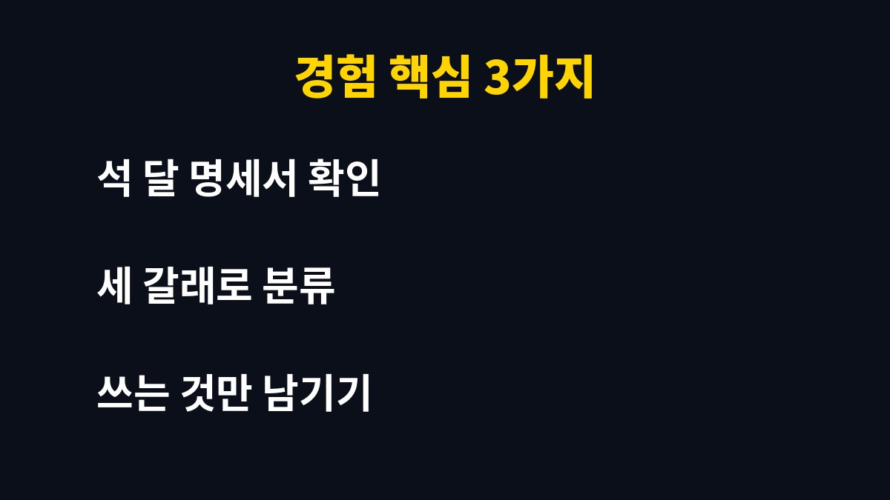

영상, 음악, 앱 같은 구독 서비스가 하나둘 늘면서 매달 어디로 얼마가 빠져나가는지 정확히 모르는 가정이라면 끝까지 읽어 보시길 바랍니다.
온라인 쇼핑몰을 운영하며 아이를 키우는 가장인 제가 자동결제를 정리한 과정과 기준을 담았습니다.
서비스마다 해지 방법이 다르므로 제가 쓴 순서는 참고용으로 봐 주시기 바랍니다.
구독료는 한 건씩 보면 크지 않아서 부담스럽게 느껴지지 않습니다.
그래서 결제 문자가 와도 그냥 넘기기 쉽습니다.
무료 체험으로 시작한 서비스가 어느새 유료로 바뀌어 있는 경우도 있습니다.
가입할 때는 필요했던 서비스를 쓰지 않게 되어도 결제만 이어집니다.
이런 결제가 모이면 1년 단위로는 적지 않은 금액이 된다는 점을 잊기 쉽습니다.
그래서 금액의 크기보다 결제가 반복된다는 점을 먼저 살펴야 한다고 생각합니다.
저도 구독이 몇 개인지 정확히 대답하지 못했습니다.
사업용 도구와 가족이 쓰는 서비스가 한 카드에 섞여 있어 더 알아보기 어려웠습니다.
명세서를 보다가 쓰지 않는 서비스가 계속 결제되고 있다는 것을 알게 되었습니다.
그날 제가 구독을 몇 개 쓰는지부터 세어 보기로 했습니다.
막상 세어 보니 가족 모두가 각자 가입한 서비스까지 더해져 예상보다 많았습니다.
자동결제는 누가 가입했는지조차 잊기 쉬워서 한 번은 전체를 모아 보아야 합니다.

먼저 사용 중인 카드의 최근 석 달 치 명세서를 모았습니다.
매달 같은 날짜에 같은 이름으로 나가는 결제를 표시했습니다.
카드 앱에 정기결제 내역을 보여 주는 메뉴가 있으면 함께 확인했습니다.
앱 스토어 결제나 통신사 소액결제로 나가는 구독은 따로 확인해야 했습니다.
찾아낸 구독을 매달 쓰는 것, 가끔 쓰는 것, 쓰지 않는 것으로 나누었습니다.
판단 기준은 최근 한 달 동안 실제로 사용했는지였습니다.
쓰지 않는 것은 곧바로 해지 후보로 올렸습니다.
가끔 쓰는 것은 필요한 달에만 가입하고 끝나면 해지하는 방식이 나을지 따져 보았습니다.
가족이 함께 쓰는 서비스는 해지 전에 먼저 가족에게 알렸습니다.
저는 아깝다는 느낌보다 실제 사용 기록을 기준으로 삼으니 결정이 쉬워졌습니다.
| 분류 | 판단 기준 | 처리 방법 |
|---|---|---|
| 매달 쓰는 것 | 최근 한 달 안에 사용 | 유지 |
| 가끔 쓰는 것 | 두세 달에 한 번 사용 | 필요할 때만 가입하는 방식 검토 |
| 쓰지 않는 것 | 석 달 이상 사용 안 함 | 해지 |
표의 기준은 제가 정한 것이며 가정마다 달라질 수 있습니다.
해지를 마치고 나니 새 서비스에 가입할 때 해지 방법과 결제일부터 확인하는 습관이 생겼습니다.
무료 체험은 가입한 날 해지 예정일을 달력에 적어 둡니다.
결제 알림을 켜 두면 금액이 바뀐 경우도 바로 알 수 있습니다.
사업용 구독은 경비로 처리할 수 있는지 따로 구분해 기록해 둡니다.
월말에 명세서를 열어 낯선 정기결제가 없는지 살펴봅니다.
이 점검은 오래 걸리지 않았고, 새는 돈을 일찍 발견하는 데 도움이 되었습니다.
가족과 함께 보면 서로 쓰는 서비스를 확인하는 대화가 자연스럽게 생깁니다.
저희 집은 이 과정을 거치며 구독을 쓰는 만큼만 두는 쪽으로 정리했습니다.
1. 카드 명세서와 결제 앱에서 최근 석 달 치 정기결제를 모두 모읍니다.
2. 서비스 이름, 금액, 결제일을 한 장의 목록으로 적습니다.
3. 최근 한 달 사용 여부로 유지, 검토, 해지로 나눕니다.
4. 해지할 서비스는 해당 서비스의 설정 화면에서 해지하고 완료 안내를 저장해 둡니다.
5. 다음 달 명세서에서 해지한 결제가 다시 나가지 않는지 확인합니다.
구독 정리는 대단한 절약이 아니라 내가 쓰는 것에만 돈을 내도록 바로잡는 일이라고 생각합니다.
서비스마다 해지 방식과 환불 조건이 다르므로 해지 전에 약관을 한 번 확인하시기 바랍니다.
이 글이 우리 집 자동결제를 점검하는 계기가 되었으면 합니다.
※ 본 글은 2026년 기준 개인 경험을 바탕으로 한 정보이며, 세금·금융 상품 선택은 본인 상황에 맞게 전문가와 확인하시길 바랍니다.